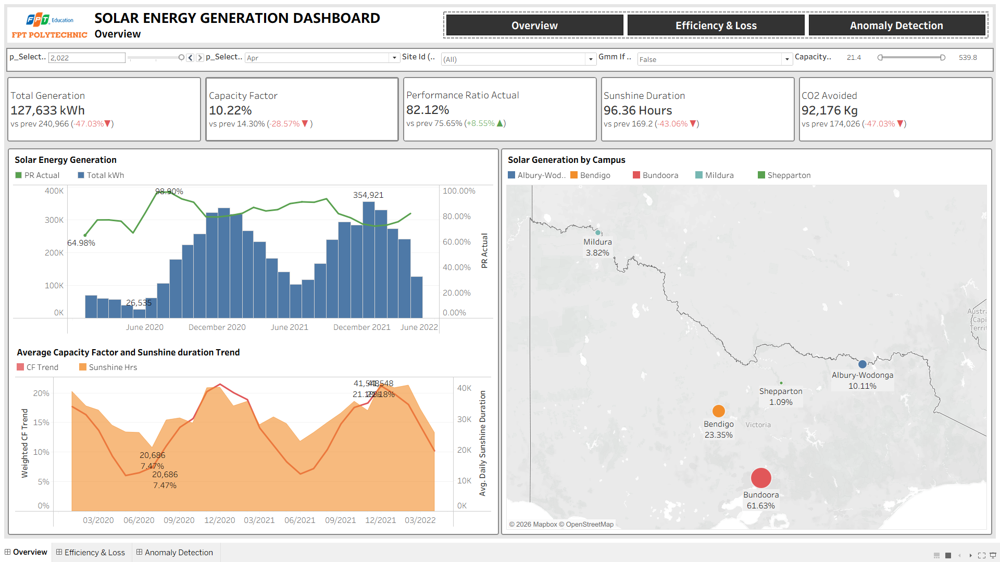

Portfolio / Architecture studies
Systems, mapped.
Bốn vùng mạng, một physical host.
Các VM Big Data kết nối Oracle qua SCAN và VIP, được lọc TCP 1521 tại host. NIC thứ hai phục vụ HDFS storage hoặc RAC interconnect.
Điểm cần đọc trên bản vẽ
Đường không mũi tên biểu diễn kết nối mạng; đường có mũi tên biểu diễn luồng dữ liệu. Các VM cùng host nên chưa tạo thành DR khác site.
Video demo · Oracle RAC
Xem trên YouTube ↗Dashboard & kết quả · The Outliers
Data & AI Lead — Ngô Tấn Đạt. Ảnh báo cáo, không phải dữ liệu live.
